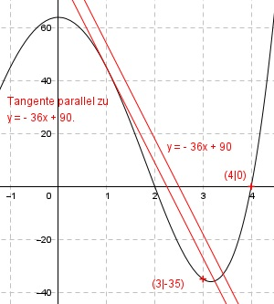

Aufgabe 106 Der Graph einer achsensymmetrischen ganzrationalen Funktion 4. Grades hat eine Nullstelle bei x = 4, an der Stelle x = 1 eine Tangente parallel zur Geraden y = -36x + 82 und geht durch den Punkt (3|-35). Wie lautet seine Funktionsgleichung?  Allgemeine Form einer achsensymmetrischen ganzrationalen Funktion 4. Grades: f(x) = ax4 + cx2 + e f’(x) = 4ax3 + 2cx f’’(x) = 12ax2 + 2c 3 Bedingungen: 1. Hat eine Nullstelle bei x = 4 bedeutet: f(4) = 0 --> a * 44 + c * 42 + e = 0 --> 256a + 16c + e = 0 I 2. Hat an der Stelle x = 1 eine Tangente parallel zur Geraden y = - 36x + 90 bedeutet: (Steigung = -36) f’(1) = -36 --> 4a * 13 + 2c * 1 = -36 --> 4a + 2c = -36 II 3. Geht durch den Punkt (3|-35) bedeutet: f(3) = -35 --> a * 34 + c * 32 + 24 = -35 --> 81a + 9 c + e = -35 III I + III * (-1) 256a + 16c + e = 0 -81a - 9c - e = 35 -------------------- 175a + 7c = 35 IV II * (-7) + IV * 2 -28a - 14c = 252 350a - 14c = 70 ----------------- 322a = 322 |:322 a = 1 a = 1 in II eingesetzt: 4 * 1 + 2c = -36 4 + 2c = -36 |-4 2c = -40 |:2 c = -20 a = 1 und c = -20 in III eingesetzt. 81 * 1 + 9 * (-20) + e = -35 81 - 180 + e = -35 -99 + e = -35 | +99 e = 64 Gesuchte Funktionsgleichung: f(x) = x4 - 20x2 + 64